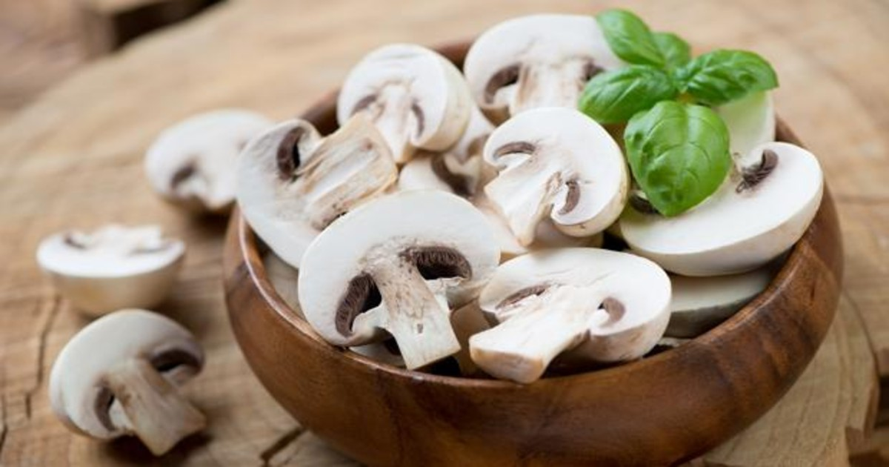
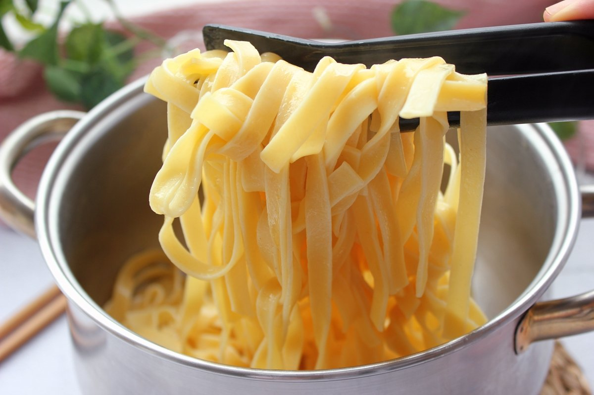
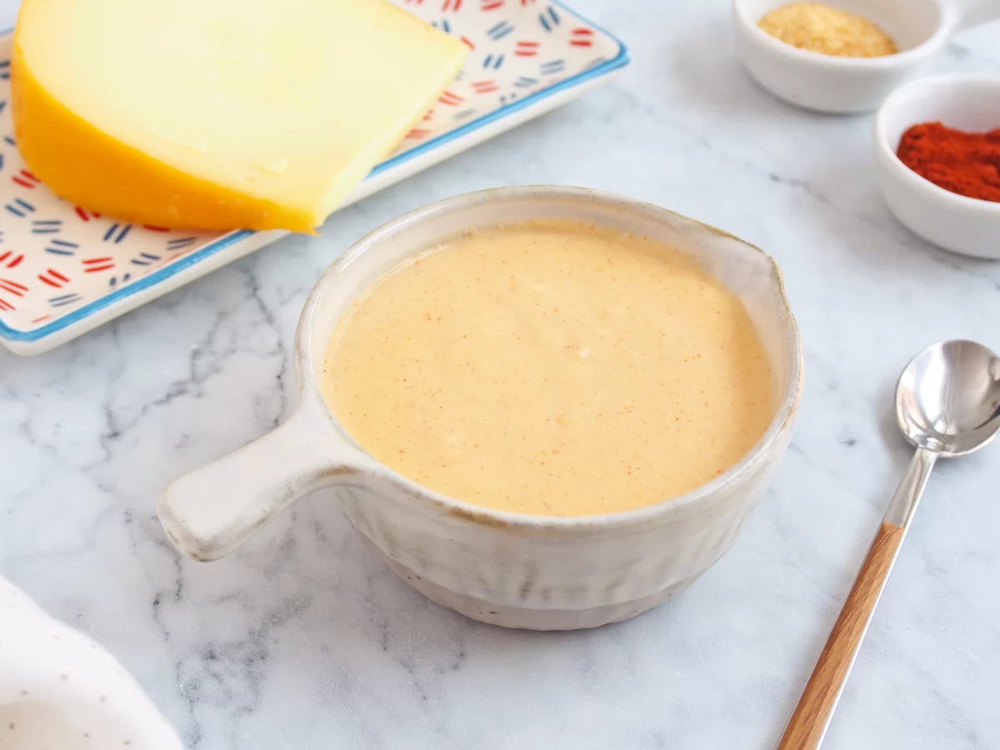

Receta de Pasta con Champiñones
"Disfruta de la exquisitez de nuestra pasta con champiñones y salsa de queso, una deliciosa combinación de pasta al dente, champiñones frescos salteados a la perfección, y una irresistible salsa de queso cremosa que envuelve cada bocado en una experiencia gastronómica única. Un plato reconfortante y lleno de sabor que te transportará a la auténtica indulgencia culinaria."

Ingredientes
Champiñones
Puedes elegir el tipo de champiñones dependiendo de tus preferencias
60gTallarines
Puedes elegir el tipo de pasta dependiendo de tus preferencias
100gSalsa de queso
Puedes elegir el tipo de queso dependiendo de tus preferencias
100mlPreparación
Tiempo estimado: [Tiempo]
- Cocina los tallarines según las instrucciones del paquete.
- En una sartén, saltea los champiñones con un poco de aceite hasta que estén dorados.
- Calienta la salsa de queso en una cacerola a fuego medio.
- Mezcla los champiñones y la salsa de queso con los tallarines cocidos.
Video
Aprende a hacer esta receta viendo el video: